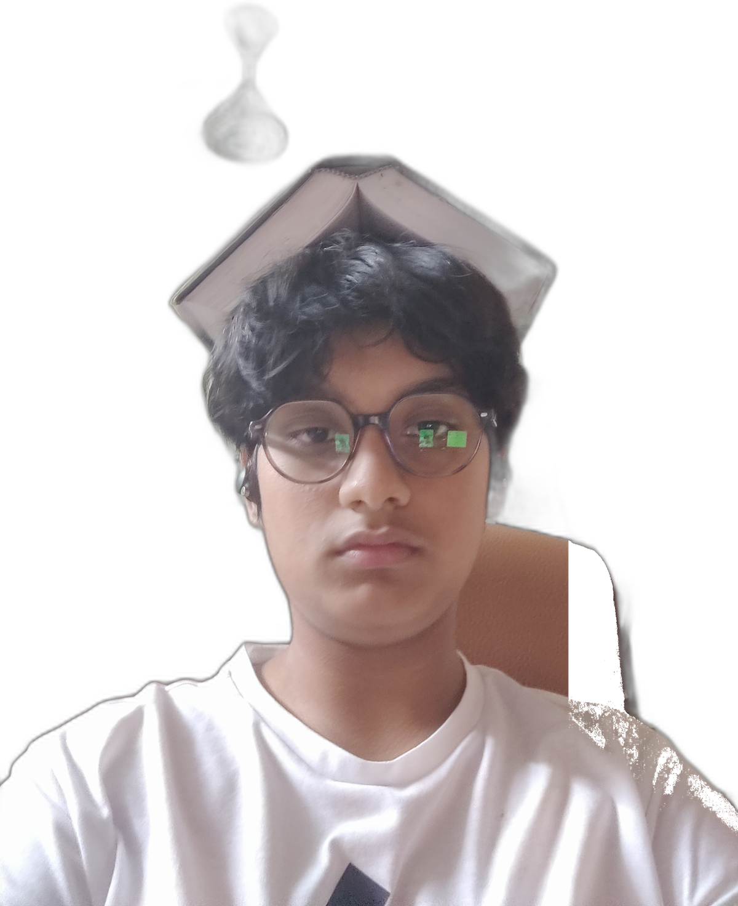
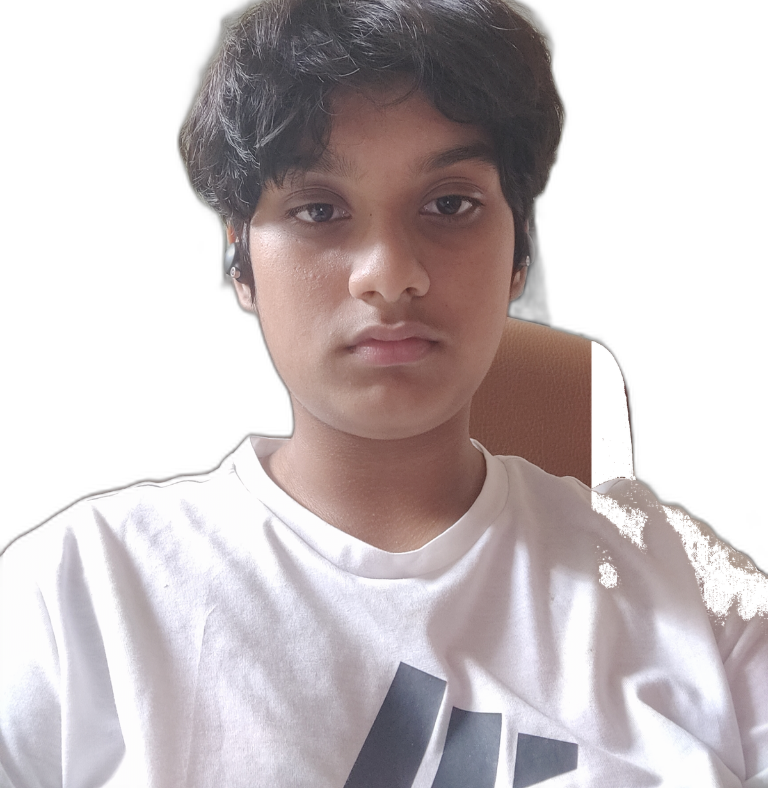

Formula 1
Race strategy, bold liveries, rivalries, and the thrill of every lap.
Hyderabad, Telangana, India
An 8th grader with a sharp eye for speed, stories, sketches, and digital design.


Add archisha-no-glasses.jpg and archisha-glasses.jpg
About
Archisha is building her own lane: part motorsport fan, part tennis enthusiast, part sketchbook explorer, and part young web designer. Her style blends precision, curiosity, and a bright creative spark.
Race strategy, bold liveries, rivalries, and the thrill of every lap.
Focus, rhythm, clean movement, and the joy of a perfectly timed shot.
Characters, scenes, ideas, and small details captured by hand.
Books that open worlds, sharpen imagination, and feed new ideas.
Layouts, interactions, typography, and pages that feel alive.
Posters, colors, visual systems, and crisp digital compositions.
Portfolio Grid
Personal fan-profile website concept inspired by motorsport energy, student creativity, and a young designer's growing portfolio.